Maple Farm
Welcome to Maple Farm.
We hope that you will discover lots of useful information here about Maple Farm and the surrounding area. Maple Farm is perfectly located just 5 minutes drive from Asahikawa Airport, making it an ideal base for exploring the famous Blue Pond, Patchwork Road, and the beautiful flower fields of Biei. The property offers easy access to all major attractions while providing a peaceful countryside setting. Check availability using the calendar below. We recommend booking early, especially during peak lavender season (mid-July to mid-August) and winter illumination and ski season (November to April). Book directly through our reservation system for the best rates and instant confirmation. You'll be redirected to our secure booking platform to complete your reservation. Note: Prices may vary between platforms. We recommend booking directly for the best rates and support. Open 8am to 8pm every day, including weekends and holidays! Various dining options under one roof. Located next to Chiyugaoka Station for fresh, hot fried chicken. (Opening times are limited!) Full-service supermarket in Higashikawa. Fresh local produce, Hokkaido specialties, and hiking snacks. Perfect for stocking up on groceries and local products. Large supermarket chain with wide selection. Fresh foods, daily necessities, and local products. Convenient shopping for extended stays and family needs. The world-famous cobalt-blue pond is just 15 minutes drive away. Features winter illuminations from December to February. Scenic route featuring the iconic Ken & Mary Tree, Seven Stars Tree, and colorful agricultural fields creating a beautiful patchwork landscape. Famous for daily penguin walks during the Winter, interactive seal tanks, and up-close animal encounters, the zoo is only 20 minutes drive away. Best Seasons: Cultural Sites: Weather: From Asahikawa Airport: Getting Around: Key Distances By Car: The closest ski resort to Maple Farm, featuring 25 courses across beginner to advanced levels. Known for excellent powder snow and night skiing until 9pm. Lift tickets: 4,500 yen/day adults. Japan's longest ski season (November to May) on Hokkaido's highest peak. Famous for deep powder, backcountry skiing, and stunning mountain views. Advanced terrain recommended for experienced skiers. Part of Daisetsuzan National Park with spectacular alpine scenery. Offers both groomed runs and off-piste opportunities. Connected to Asahidake via ropeway system for mountain exploration. A smaller, family-friendly ski area perfect for beginners and intermediate skiers. Affordable lift tickets and relaxed atmosphere. Great for families with children learning to ski. Modern spa designed by Kengo Kuma with panoramic views. Two unique saunas with auto-loyly, outdoor baths overlooking Higashikawa town. Free massage chairs and family-friendly facilities. Forest onsen with Daisetsuzan mountain views. Outdoor baths under starry skies, cottages with private hot springs. Near Asahikawa Airport and Zoo. Peaceful retreat in nature. Beautiful hot spring village near Blue Pond. Known as "hot springs for beautiful skin" with 100% natural flowing water. Multiple hotels and day-trip bathing options available. Mountain hot springs at 1000m elevation on Hokkaido's highest peak. Rich in metasilicic acid for moisturizing skin. Access by ropeway with stunning mountain views. Luxury onsen in Asahikawa city with private open-air baths. Traditional Japanese healing experience with city views. Convenient location with premium facilities. Famous hot spring resort at the base of Daisetsuzan mountains. Over 60 hot spring sources with unique scents and colors. Stunning gorge views and hiking trails. Modern onsen facility in Asahikawa open 23 hours daily. Features rare Hutamata Radium waters unique to Hokkaido. Budget-friendly with overnight stay options. Historic 1897 onsen in dramatic gorge setting near Hagoromo Falls. Natural flowing springs rich in minerals for beautiful skin. Peaceful retreat in Daisetsuzan National Park. Maple Farm offers comfortable accommodation in the heart of Hokkaido's most scenic region. Located just minutes from Asahikawa Airport and Biei's famous attractions, our property provides the perfect blend of convenience and tranquility. Whether you're here for the summer flower fields, winter illuminations, or year-round cultural experiences, Maple Farm serves as your ideal base for exploring all that this beautiful region has to offer. 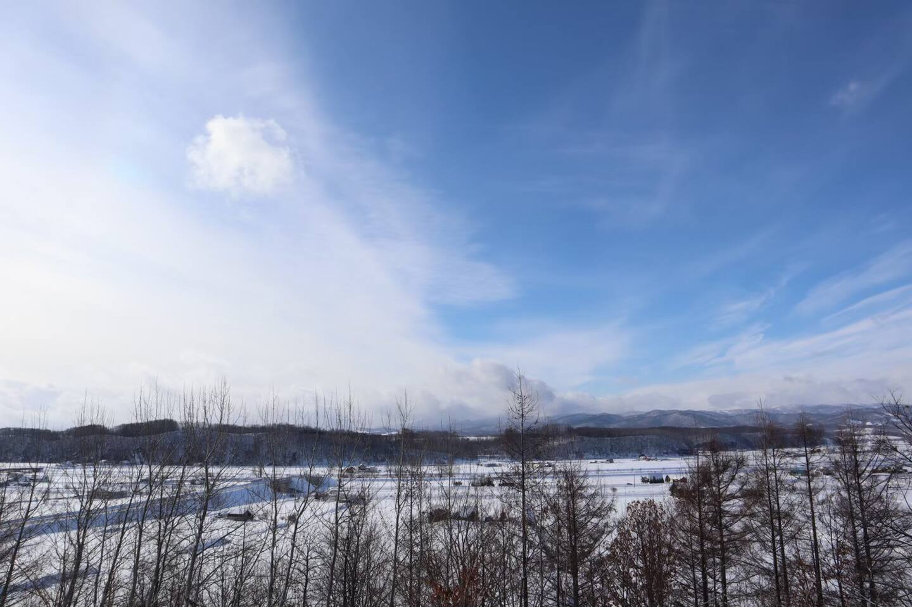
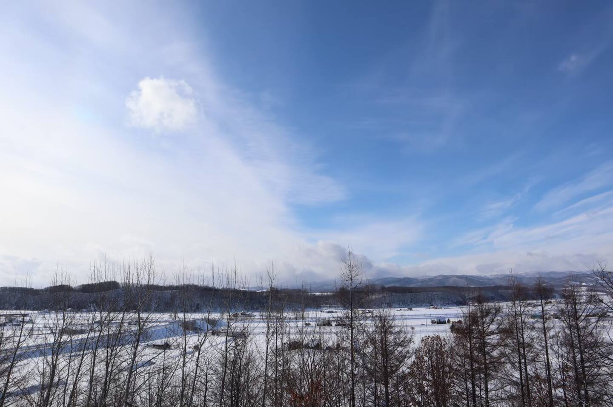 
 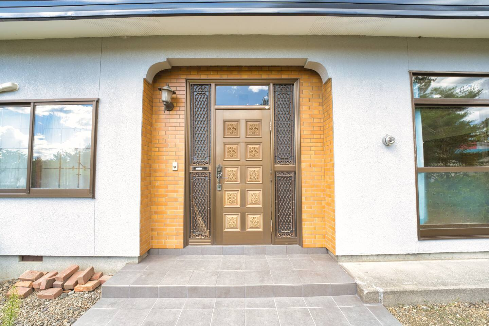
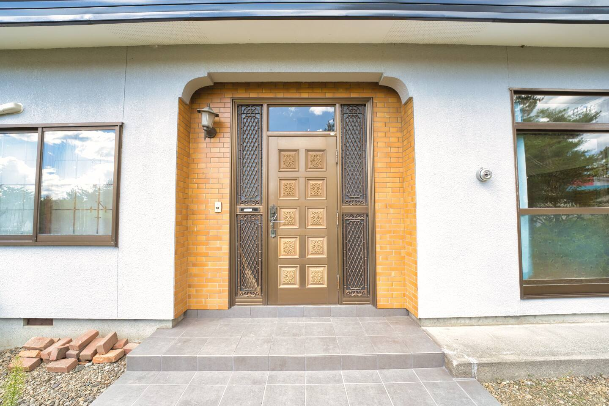 


 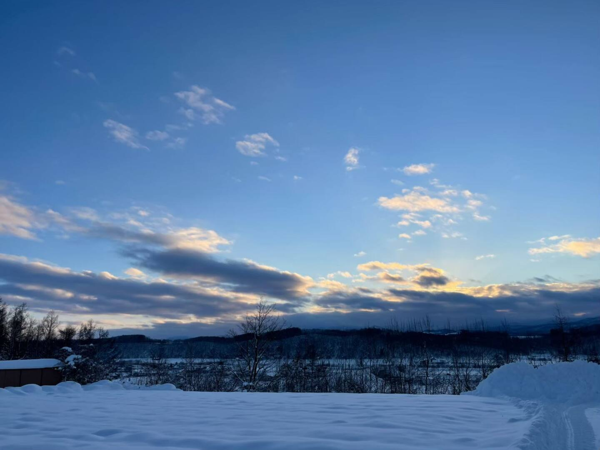
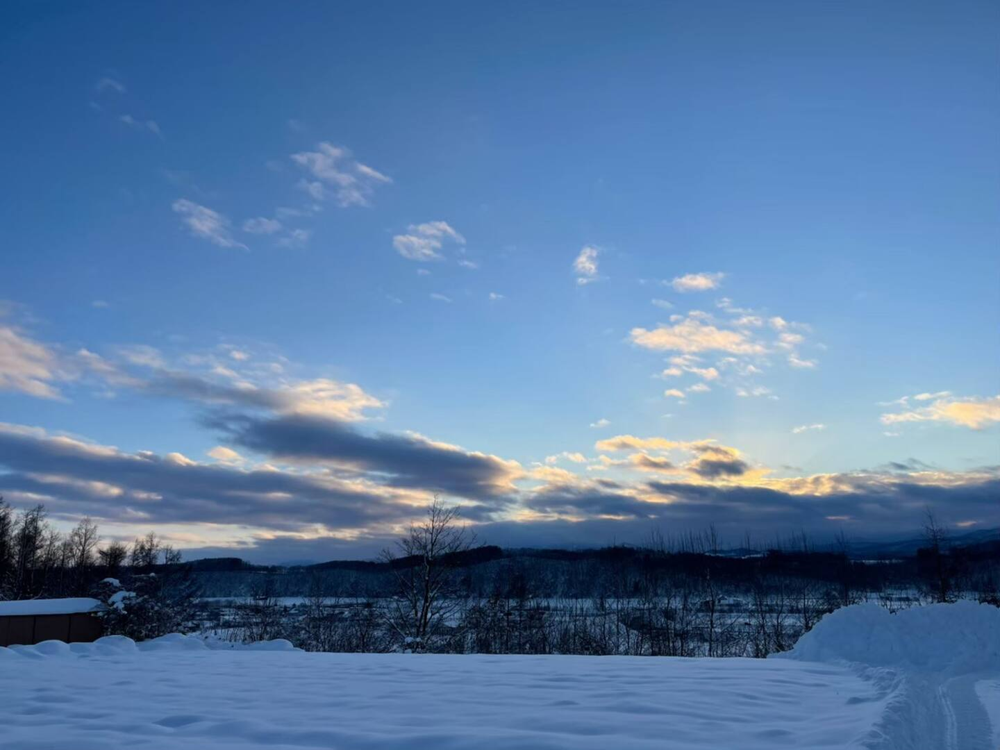 
 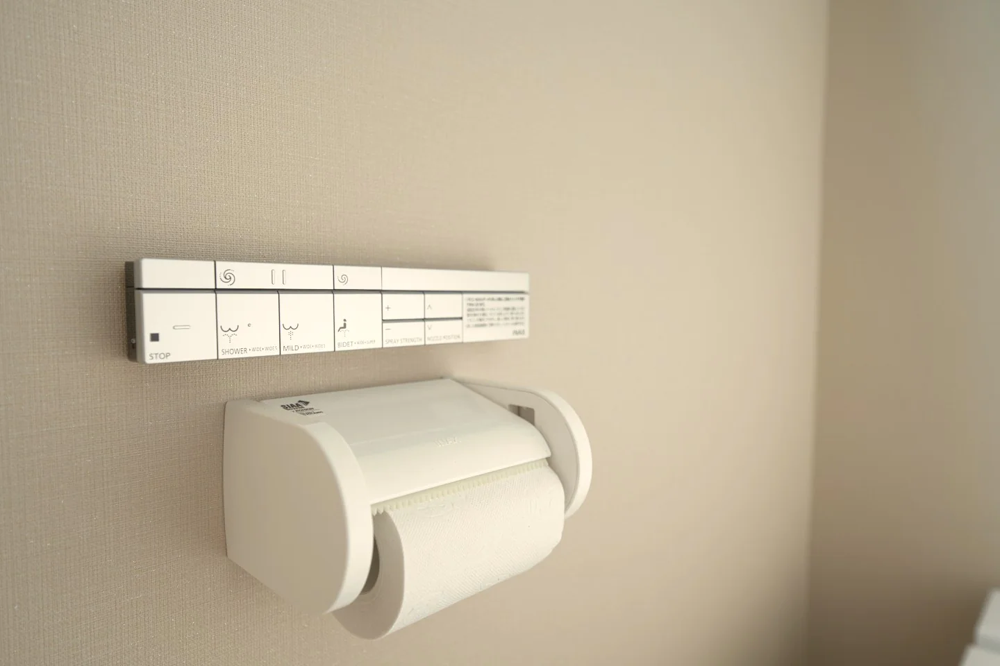
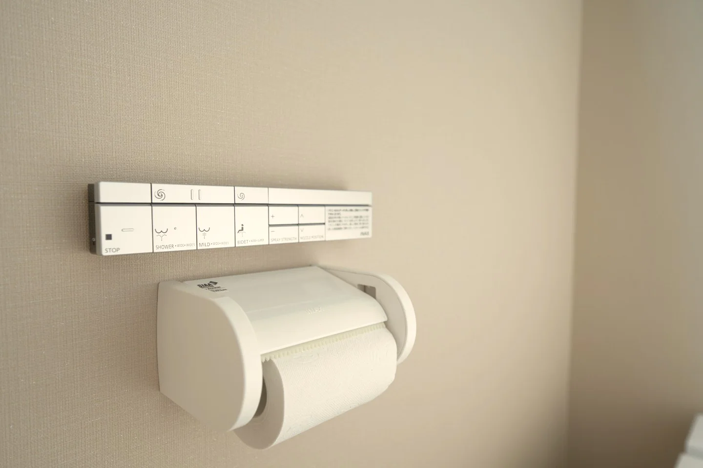 
 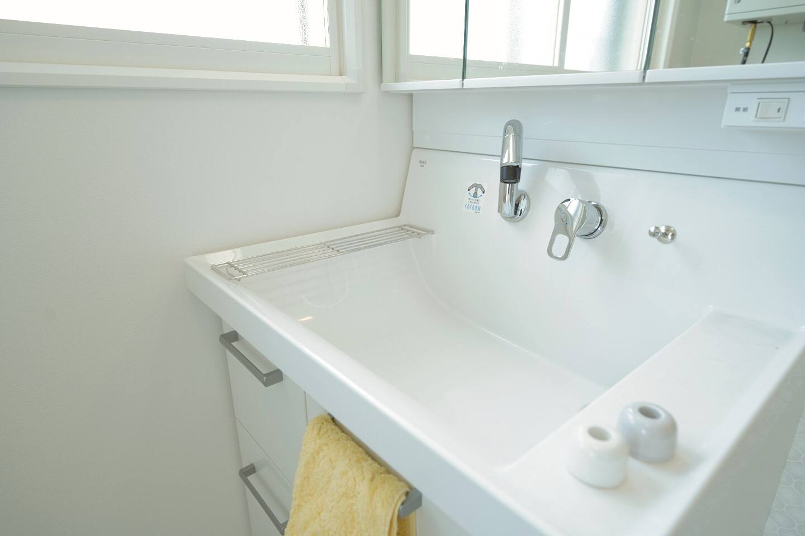
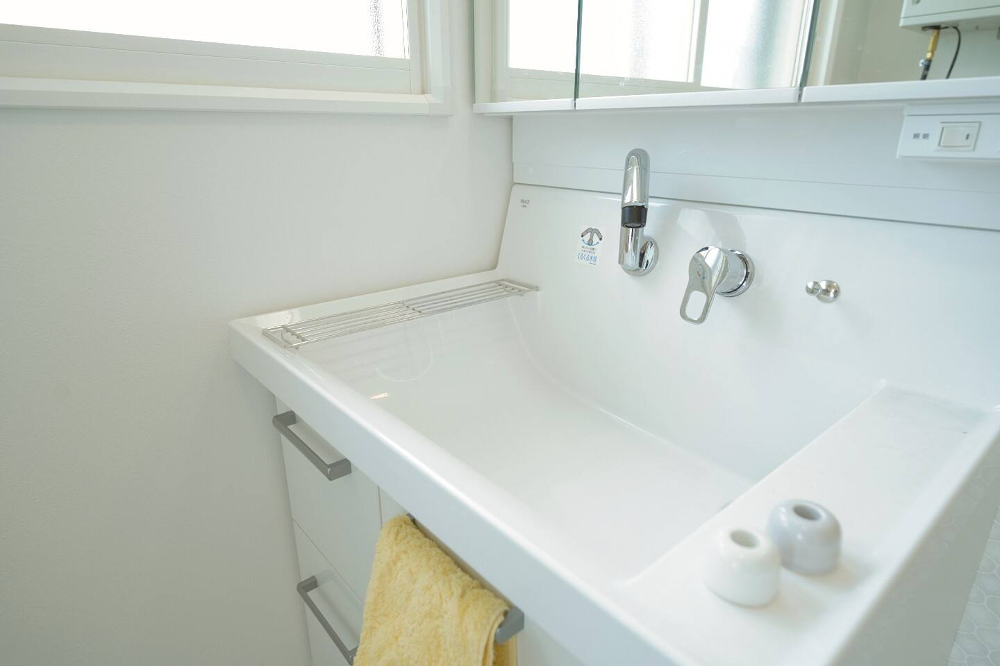 


 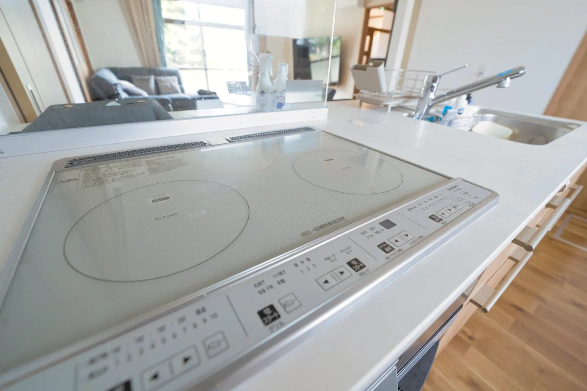
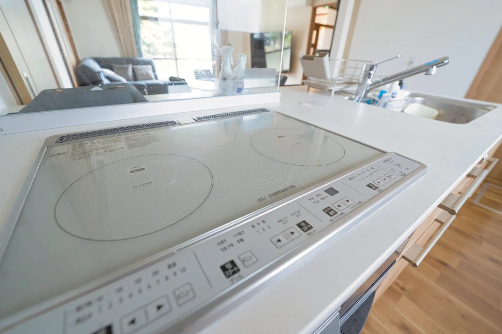 


Location
Availability
Direct Booking
Also Available On:
Food & Drink
Supermarkets
Attractions
Useful Info
Summer (July-August) for flower fields and mild weather. Winter (December-February) for skiiing, the Blue Pond illuminations and Asahikawa Winter Festival.
Asahikawa City Museum showcasing Ainu culture, Otokoyama Sake Brewery for tastings, and traditional Hokkaido handicraft shops.
Summer temperatures 15-35°C (59-95°F). Winter temperatures -15-10°C (5-50°F) with many days of powder snow and blue skies.Transport and Access
Taxi (5 minutes; <¥1,500) or rental cars available at the airport.
Car rental recommended for maximum flexibility accessing remote attractions. Bicycle rentals available: 200 yen/hour regular, 600 yen/hour electric bikes.
Blue Pond (15 min), Asahiyama Zoo (20 min), Furano (1h), Shikisai Hill (20 min).Ski Resorts
Hot Springs
About Maple Farm